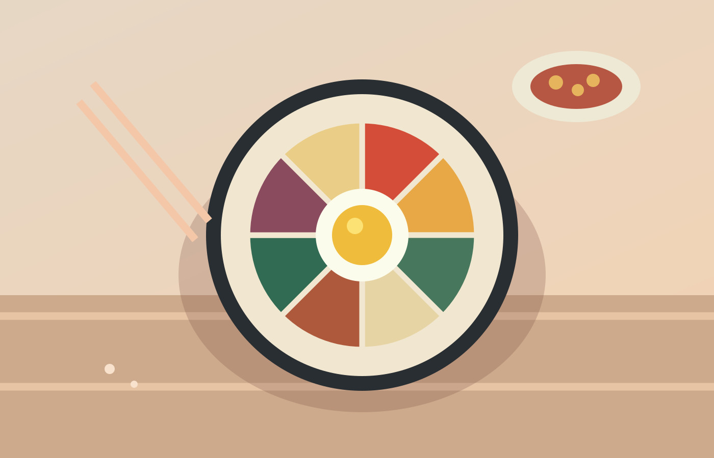

Food brings people together
Discover Korean dishes like bibimbap (a mixed rice bowl), kimchi (fermented vegetables), and tteokbokki (spicy rice cakes).
THE CULTURE / CHAPTER 02
From a shared meal to a traditional outfit, some of the best travel memories come from how people live, create, and connect.

A FEW THINGS TO KNOW
Curiosity and respect can turn an ordinary afternoon into your favorite memory of a trip.
Discover Korean dishes like bibimbap (a mixed rice bowl), kimchi (fermented vegetables), and tteokbokki (spicy rice cakes).
Traditional hanbok clothing and hanok architecture are still celebrated, especially at cultural sites and special occasions.
Respectful greetings, sharing food, and showing consideration for others are meaningful parts of many social interactions.
A LITTLE LANGUAGE GOES A LONG WAY
Learning a few words before a trip is a thoughtful way to connect with the people you meet.
Try saying “hello” before you order!
| ENGLISH | KOREAN | PRONUNCIATION |
|---|---|---|
| Hello | 안녕하세요 | Annyeonghaseyo |
| Thank you | 감사합니다 | Gamsahamnida |
| Yes | 네 | Ne |
| No | 아니요 | Aniyo |
TRAVEL THOUGHTFULLY
When visiting cultural places, take time to learn local rules and be mindful of the people around you.
Respect signs, quiet areas, and any photography restrictions.
Remember that traditional villages are also places where people live.
Be open to unfamiliar flavors, and learn basic dining customs before you go.